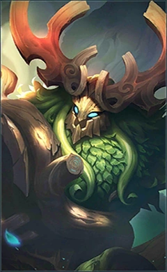

Kagura
Durante anos, o guarda-chuva Seimei ficou quieto dentro do santuário.
Todos os anos, no memorial para Seimei, as pessoas rezavam sinceramente de joelhos,
desejando um melhor domínio das artes yin yang.
Mas séculos se passaram, e o guarda-chuva Seimei nunca mostrou nenhum milagre.
Tudo mudou quando Kagura, o descendente de Seimei, entrou no santuário para rezar pela primeira vez.
Antes do início da cerimônia, a menina órfã subiu secretamente em uma árvore do lado de fora do santuário
para dar uma espiada no altar dentro.

Roger
Um lobisomem vagando pelas florestas escuras ansiando por vingança
Roger já foi um ser humano. Durante uma batalha com o lobisomem White Fang,
ele foi morto pelos dentes afiados de White Fang e ressuscitou como um lobisomem.
Roger, que havia renascido, prometeu se vingar e erradicar a ameaça dos lobisomens deste mundo.
Badang
Há muito tempo havia uma pequena aldeia, cercada por todos os lados pela água, que repousava nas regiões do sul da Terra do Amanhecer.
Os aldeões eram muito trabalhadores, pescavam dia e noite para ganhar a vida. Entre eles estava um homem forte, um poderoso guerreiro,
chamado Badang. Dizia-se que Badang podia levantar um kart cheio de lenha, com apenas um braço.
Ele tem um grande senso de justiça e um coração cheio de coragem.

Lesley
Lesley foi adotada pela família Vance, com o patriarca da casa nobre até mesmo colocando seu único herdeiro,
Harley sob sua tutela. Harley, era um encrenqueiro natural, que usou seus talentos em magia para
involuntariamente causar problemas para a família Vance. Apenas Lesley poderia manter Harley sob controle.
A sequência problemática de Harley foi a última parte do calor dentro da consciência de Lesley.

Belerick
Quando Belerick era apenas uma muda jovem, ele foi escolhido pelos Antigos e recebeu a essência da vida e da Mãe Natureza;
isso lhe conferiu os poderes de sabedoria inteligente, profunda sabedoria e a maravilhosa capacidade de reencarnação.
Sob a proteção dos Antigos,
ele viveu junto com as criaturas elementais dentro das Cordilheiras de Lantis, um lugar florescente com vida e vitalidade.
Ler mais